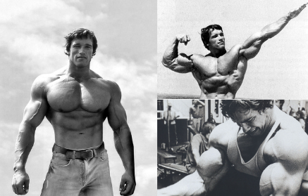
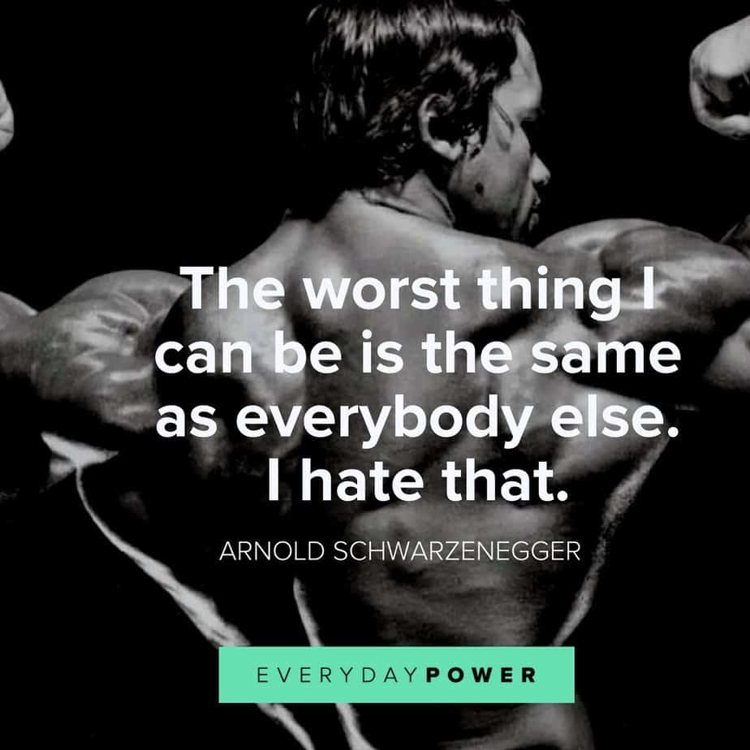
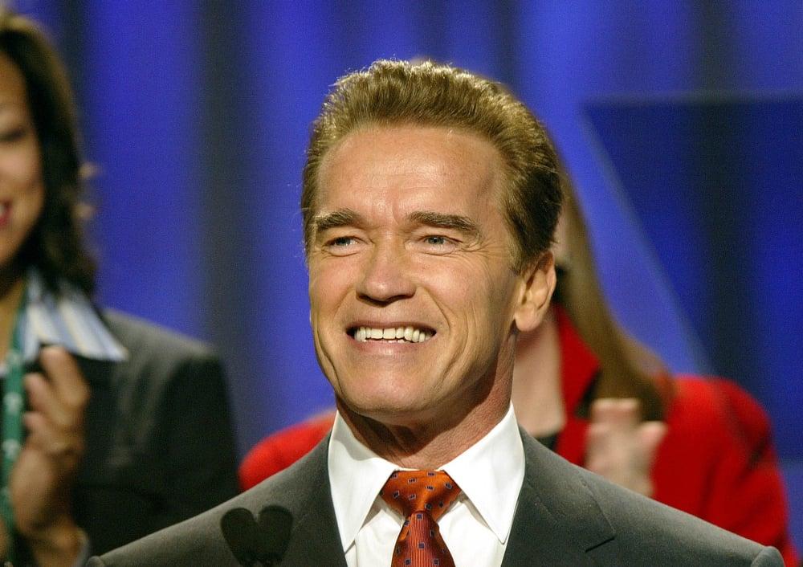

Arnold Alois Schwarzenegger

Seven times Mr. Olympia
- is an Austrian-American actor, filmmaker, businessman, author, and former politician and
professional bodybuilder. He served as the 38th Governor of California from 2003 to 2011.
As of 2020, he is the most recent Republican governor of California.
As a kid, Arnold’s favorite movies were the B-level Hercules movies that Reg Parker, a bodybuilder, starred in.
These movies fueled Arnold’s love and obsession with bodybuilding and America.
To get to America, Arnold wooed Joe Weider, the man behind the International Federation of Body Building,
an organization that sponsored contests such Mr. Universe and Mr. Olympia, with his bravado, potential,
and sense of humor.
Arnold would go on to win five Mr. Universe titles and six Mr. Olympia crowns during his bodybuilding career,
which was unprecedented. After his bodybuilding career ended, Arnold set his sights on Hollywood fame. After
winning a Golden Globe Award for Best Newcomer for his performance in Stay Hungry (1976), he became an action
hero in movies like Conan the Barbarian (1982), The Terminator (1984), Terminator 2: Judgment Day (1991), and
Terminator 3: Rise of the Machines (2003). He became California’s governor in 2003,
and after his time as governor came to an end, he returned to Hollywood.
Read and get inspired by Arnold
1. “Failure is not an option. Everyone has to succeed.”
{kind=link}
2. “The worst thing I can be is the same as everybody else. I hate that.”
{kind=link}
3. “The mind is the limit. As long as the mind can envision the fact that you can do something, you can do it, as long as you really believe 100 percent.”
{kind=link}
See more...